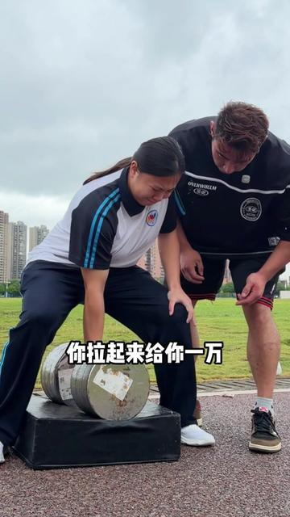

主账号
抖音「健身华哥」
- 粉丝
- 约723.9万
- 获赞
- 约1.0亿
人设「华哥带你练」，国家级裁判员、航空兵第十师退役。2025.07以来发布178条视频；近30天带货达人榜滋补保健日榜第3。
短视频内容编导｜健身IP内容
我是小许，在上海偲翼文化传媒有限公司担任编导，服务抖音健身IP「健身华哥」。负责选题、文案、拍摄执行和数据复盘，也做带货视频。


抖音「健身华哥」｜2025.07—至今
CURRENT ROLE
2025.07—至今。负责选题、文案、拍摄执行、数据复盘，也做带货视频。主账号和小号各参与约90条，合计约180条。
主账号
人设「华哥带你练」，国家级裁判员、航空兵第十师退役。2025.07以来发布178条视频；近30天带货达人榜滋补保健日榜第3。
小号
与主账号联动的百日直播号，参与视频约90条。
精选案例
CASE 01｜任职期间点赞最高
用「健身华哥」对上16岁小姑娘做反差，标题直接抛出「你们猜我能赢吗」，让观众带着输赢悬念看到最后。
CASE 02｜人物系列
围绕学员良子，从入营测试一路拍到登顶峨眉山。2025.07以来主账号点赞前16的视频里，9条来自良子系列，每条点赞都在39.2万以上。
CASE 03｜职业体验系列
用「第N集」编号做成系列，每集一个具体任务：去工地摆摊卖凉面、剥小龙虾。任务目标清楚，观众一眼就知道这一集要看什么。
CASE 04｜带货内容
账号主营滋补保健。写带货脚本时，我按三件事来搭结构。
内容方法
做良子这类人物系列时，我把每一集都放进同一条故事线里：先定人物和终点，再安排冲突，每集结尾留一个问题，最后用数据决定下一集的节奏。点击左侧步骤查看。
数据复盘
数据来源：飞瓜数据，主账号近30天（2026/10/05—11/03）。
AI工具
AI辅助｜文字工作
辅助选题整理、文案初稿和复盘表搭建。初稿由AI出，判断和定稿由我来做。
AI辅助｜视频生成
用于AI视频生成，辅助做画面尝试和素材补充。
日常工具
计算机科学与技术本科。
合作方向
短视频编导｜人物系列策划｜带货脚本｜AI内容工作流